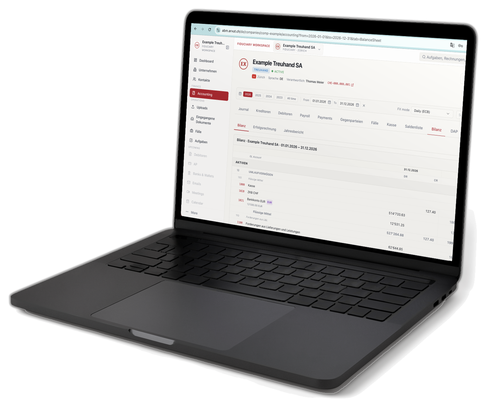
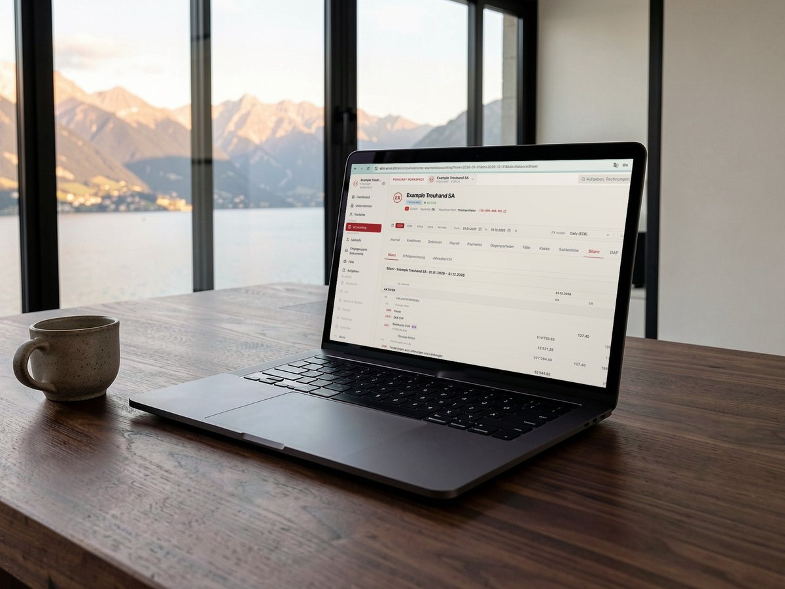
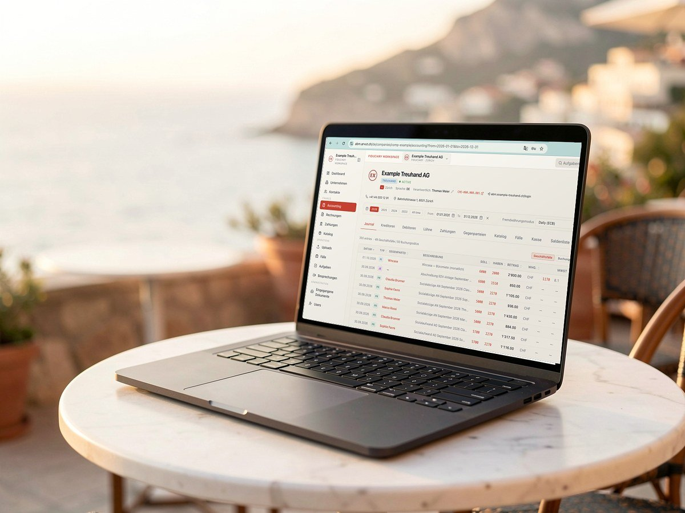

La macchina contabile in abbonamento
Non vendiamo software né hardware, e non togliamo il lavoro al vostro contabile. Gli mettiamo sulla scrivania un computer Arvut: sopra ci sono ABM, i nostri agenti IA e le vostre cartelle, aggiornati ogni giorno. Non c'è nulla da imparare. L'IT esterno non serve.
Resta di Arvut, lavora da voi. I documenti nella cartella, «elabora»: banca, giustificativi e IVA tornano preparati. I mandati restano vostri.
Tutto questo costa, e niente di tutto questo compare nel listino di nessun programma di contabilità.
Al vostro contabile, al CFO, a chi segue debitori e creditori. Sopra:
Libri, scadenzari, banca, documenti. L'assistente Vera risponde a partire dai libri.
I documenti arrivano da soli dal computer del cliente.
Lavorano con file e cartelle direttamente su questo computer e con i libri in ABM: registrare un estratto conto, emettere le fatture, archiviare i documenti, preparare la dichiarazione.
Il computer resta di proprietà di Arvut: lo manteniamo, lo aggiorniamo e, se serve, lo sostituiamo. Da remoto solo con il vostro consenso; lo schermo e il lavoro del contabile non li vediamo.
Li aggiorniamo praticamente ogni giorno, senza chiamare l'IT. Si aggiornano le competenze; le regole contabili e le aliquote IVA seguono la legge, non la versione. Ogni versione viene conservata, la precedente si può ripristinare.
Libri e documenti sono in ABM, con copie in più luoghi indipendenti. L'esportazione dei vostri libri in un file, alla prima richiesta, anche se ve ne andate.
Non c'è nulla da imparare. Né un nuovo software, né strumenti di IA. Né specialisti esterni da chiamare per configurazione e assistenza. Tutto è a portata di mano, fa tutto ABM.
La responsabilità resta dove deve stare. Un documento dubbio il sistema non lo registra: lo restituisce con una domanda. Nella dichiarazione non va nulla senza il vostro «Applica».
Il nostro obiettivo: contabilità, finanza e gestionale aziendale senza lavoro manuale. Oggi passano senza la mano del contabile: banca, archiviazione dei documenti, scadenzari, fatture QR, IVA. Restano a mano il controllo, i documenti dubbi e la firma: ciò che richiede la vostra professionalità. L'elenco completo: arvut.ch/automation.
Sulla scrivania del contabile due monitor: su uno il cedolino, sull'altro il programma di contabilità. Il contabile legge i numeri da uno schermo e li digita nell'altro. Sono moduli dello stesso programma. «Perché non un import?» – «Bisogna chiamare il tecnico IT. Costa caro. Così costa meno.»
Una collaboratrice sta già inserendo i dati di maggio. Poi si scopre che il tecnico IT ha dimenticato di inserire il nuovo cambio trimestrale. Bisogna reinserire tutto.
Il CFO ha preparato i report. Il titolare porta altre fatture, retrodatate. Tutti i report sono da buttare, tutto da rifare.
Sull'AWC queste scene non esistono. I dati entrano automaticamente. Il cambio viene preso da solo, quello ufficiale, alla data giusta. Una fattura retrodatata il sistema la registra e ricalcola il report in pochi secondi: i report nascono dai libri, non a mano in Excel.
Magazzino e gestione delle scorte · registratori di cassa e POS · solleciti automatici ai debitori · ERP su base EspoCRM. Ogni punto diventa una riga di contratto.
Cosa è automatizzato oggi, cosa è automatizzabile e cosa resta alla persona, su una sola pagina: arvut.ch/automation.
Classificatori e cantina non sono più uno strumento di lavoro: si lavora con la copia digitale, allegata alla registrazione. Cosa conservare in originale lo decide la legge, non l'abitudine.
L'ufficio è una scelta, non una necessità: con l'AWC il contabile lavora dove gli è più comodo, e i libri quadrano ogni mattina.




Mettiamo l'AWC accanto al vostro contabile e prendiamo uno dei vostri mandati in parallelo ai vostri libri. Per il cliente non cambia nulla.
Un'ora di avviamento, ABM Courier per i vostri clienti, accessi con il vostro marchio.
Voi controllate e firmate con il vostro nome. I mandati sono vostri, il marchio è vostro, il prezzo al cliente lo fate voi.
La postazione non ha un prezzo a parte. Pagate secondo la tariffa per fiduciarie — per le registrazioni che quadrano con la banca.
Oppure una riga in risposta alla nostra lettera.